菏泽初中信息技术考试练习系统
安装方法&注意事项
本站常驻文章 | 作者：Dan_Evan
DE's Website
本文最后修改于2025年4月18日
信息技术练习系统、Python3.4.4、WPS Office校园版、试题答案等附件都可以在网盘中下载。
如果你【①不看网盘内容而下载其他版本的软件、②不看完整篇文章导致不会操作】而产生的疑问，请自行解决。
两个安装包版本可选：
V1.6（2024）和V2.0（2025）

V1.6版本和V2.0版本的安装包
这两个版本的题库完全一样，Win7/Win10建议优先选择V1.6版本，Win11建议优先选择V2.0版本。
进入安装界面是空白纯背景界面，先点“下一步”，

直接点下一步
然后按照安装提示进行安装即可(Win7一般直接无脑下一步即可，Win10和Win11请不要安装在C盘目录下，后文我会进行解释)

后面自行正常安装，可以无脑下一步

安装完成
如果嫌麻烦可以用免安装版（后续我又补充了2.0版本的免安装版）

免安装版
使用解压缩软件全部解压（注意尽量不要放在C盘）

比如这里我使用Bandizip解压，其他解压缩软件方法差不多，如果你没有解压缩软件可以安装7-zip、WinRAR、Bandizip等
(解压好以后直接打开里面的HZExam.exe，注意必须全部解压，不要直接在压缩包内打开)

双击打开HZExam.exe
安装成功后打开软件，就会进入主界面

主界面
如果运行报错（尤其是针对Win7系统）就尝试安装网盘“运行报错就安装这里面的运行库”文件夹里面提供的“.NET4.0运行库”

(可选)安装.NET4.0运行库
（1）Win7以上系统（如Win10，Win11），如果“生成考卷”时报错：
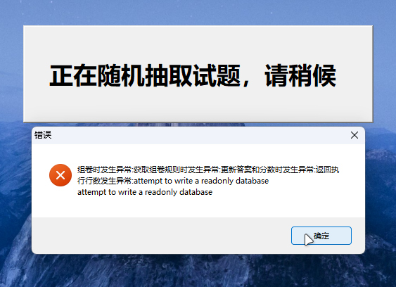弹窗报错信息
① 请退出软件并右键软件图标，选择“以管理员身份运行”。
(但是需要注意，Win10和Win11以管理员身份运行以后，模拟考试虽然可以正常使用，但是WPS三道题不判分！！！(详见下文“（3）”))
以管理员身份运行
② 让软件安装在C盘以外的位置，或者直接用免安装版，就不需要管理员运行也能正常开卷，并且WPS题目也能判分。（Win10，Win11亲测可以正常考试）
（2）像Python题目需要右键并“Edit with IDLE”的，对于Win11可能是这样的：
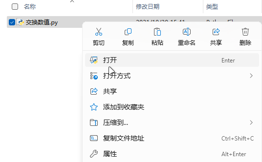没有“Edit with IDLE”
请先右键，再点“显示更多选项”，就出现“Edit with IDLE”选项了。
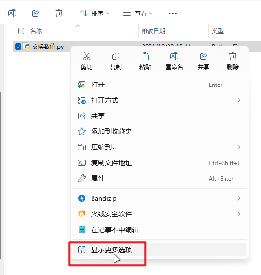显示更多选项
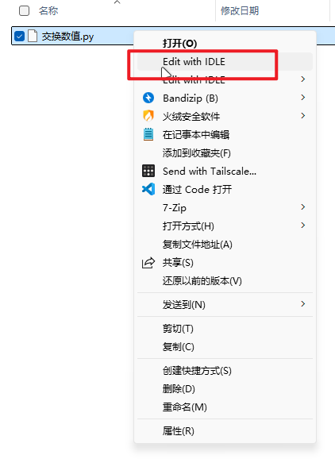选择“Edit with IDLE”
或者在右键的时候同时按住键盘上的“Shift”键，也会直接出现“Edit with IDLE”选项。
（3）对于Win11，如果你在做模拟考试的时候，发现WPS三件套的题目最后都不给分，并且回过头来发现提示“答题文件不存在”，就像下面这样：
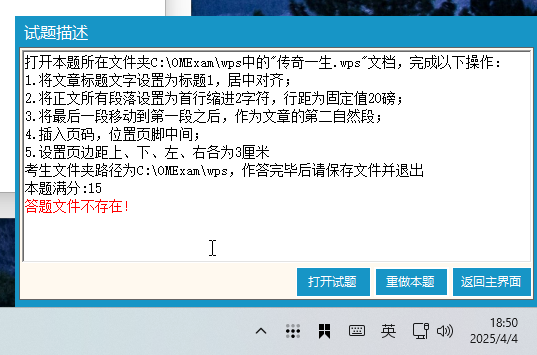答题文件不存在
这个问题是“管理员身份运行”的锅，上面已经说了对策：
① Win7：不使用管理员身份运行
② Win10/Win11：安装在C盘以外的位置，或者直接用免安装版
如果还是不行，暂时我也没法了，记下来是什么题然后去练习题里面单做吧……
（1）Python题目需要安装Python3.4：
安装这个文件夹里面的Python3.4.4（两个版本可选，不是32位版系统的话就用64位版，否则用32位版）

Python3.4.4安装包

一般选择64位即可
直接打开安装包进行安装即可

选择“为所有人(For All Users)”

尽量不要更改安装路径，直接下一步

直接安装即可
建议别改安装路径，如果你改了安装路径就在主程序里面把Python定位到Python3.4安装目录(一般是C:\Python34\)

主程序里配置Python环境

（可以点击“..”选择，精确到“python.exe”）
（2）办公软件(文字、表格、演示文稿)题目需要安装WPS Office
(微软Office三件套应该也可以，但是个别情况下操作可能不得分，并且一些WPS独占文档格式如.wps .et .dps等，必须用WPS打开，所以建议安装WPS Office)：
安装这个文件夹里面的WPS校园版(官网上面向普通用户的家用版也可以，只是这个校园版完全符合办公三件套练习题的操作标准，其他版本操作可能不得分)

WPS Office安装包

直接下载打开安装包进行安装即可

如果杀毒软件拦截请“允许”（为什么会被拦截大家懂的都懂）

配置好直接安装即可
安装好以后正常使用即可
注意：下面是WPS取消广告展示的方法
右键桌面上的WPS图标，选择“打开文件所在位置”
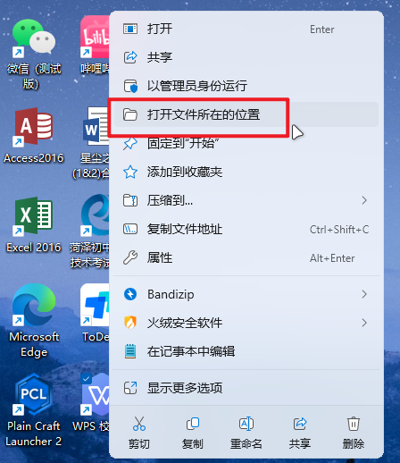打开文件所在位置
打开“WPS Office”文件夹，找到“11.3.0.8775”文件夹，进去以后再进“office6”文件夹，找到ksomisc.exe文件，双击打开
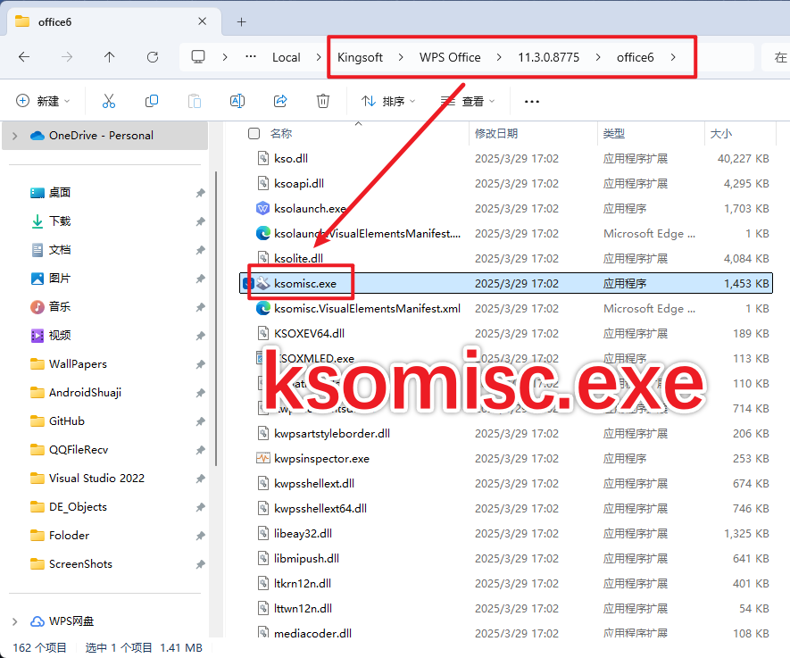打开ksomisc.exe
在弹出的窗口中，点击“高级”
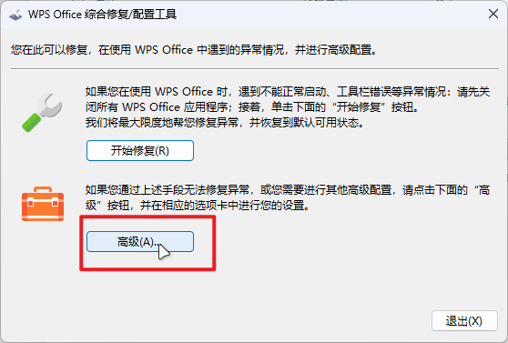点击“高级”
在“其他选项”里面，把广告相关的三个选项的勾取消勾选
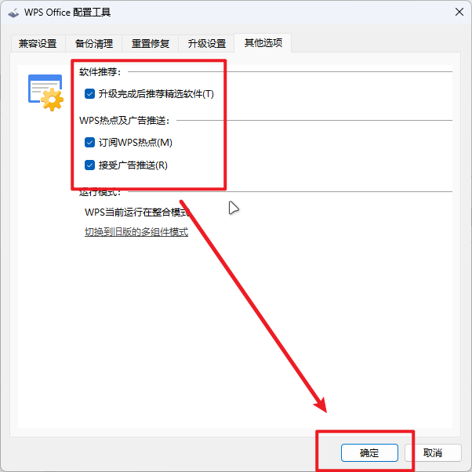取消勾选“显示广告”
点击“确定”，然后你的WPS Office就没有广告了，如果还有弹窗广告的话建议安装一个火绒安全软件，可以屏蔽弹窗广告
提供了2024版题库完整答案（包括Python题目答案）+Python题目答案（只有Python答案），可以下载后查阅

题库答案在这两个文件夹里，自行下载
同时这里放出在线查看网址（腾讯文档）：
如果本篇教程对你很有帮助，可以关注我的B站：@Dan_Evan，以后更多教程我会以视频的形式分享给大家，欢迎给我一键三连，感谢支持！
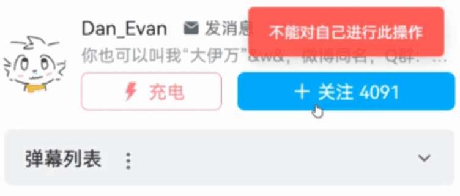关注我的B站 :)
如果还有不懂的地方可以联系我：
彩蛋：本网站及文章源代码开发样图：
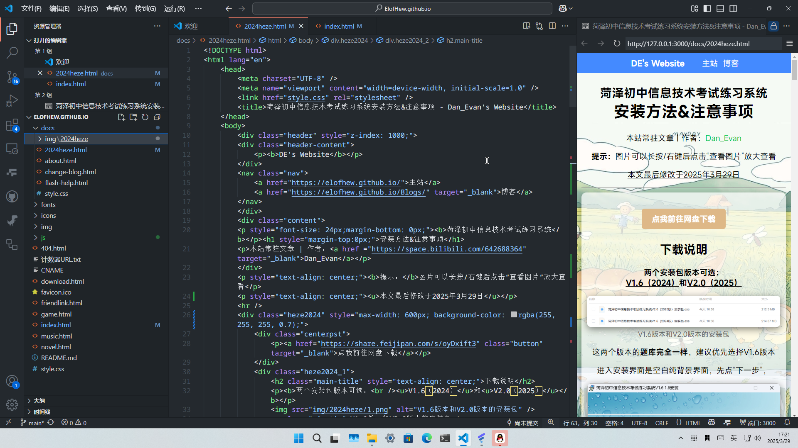本网站及文章源代码开发样图